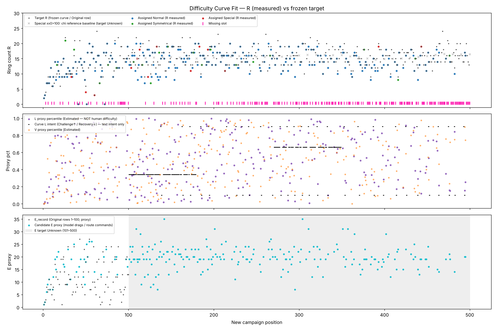

Rotate Ring — New Campaign 500 · v2
◀ Prev
Jump
Next ▶
Tất cả
Normal
Special (đuôi 0/3)
Symmetrical (đuôi 6)
Missing
Cần GD review
Đã xếp
Mới chèn v2
Missing có đề xuất
Zoom
Mọi hình cùng tỉ lệ camera (14 px/đơn vị × zoom). Xanh=Normal, Đỏ=Special, Lá=Symmetrical, Xám=Missing, viền vàng=cần GD.
Level không được xếp
Level không được xếp (Rejected / Hold / Eligible chưa xếp)
Difficulty curve fit
